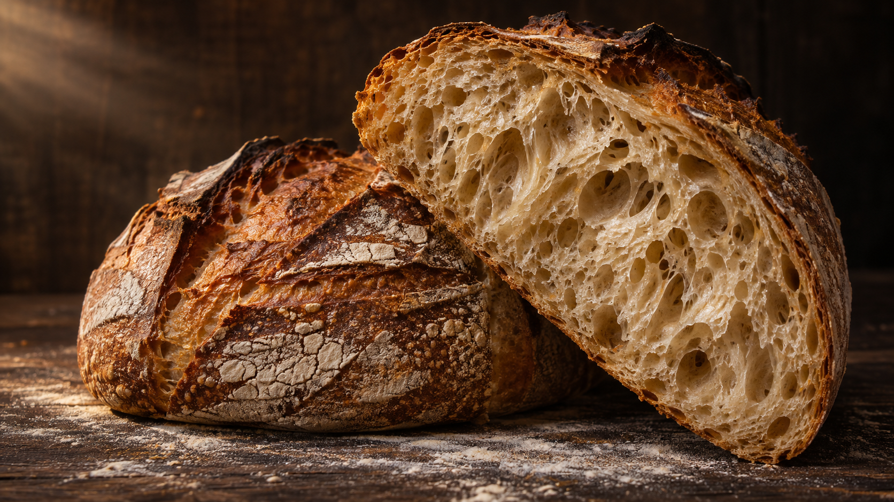
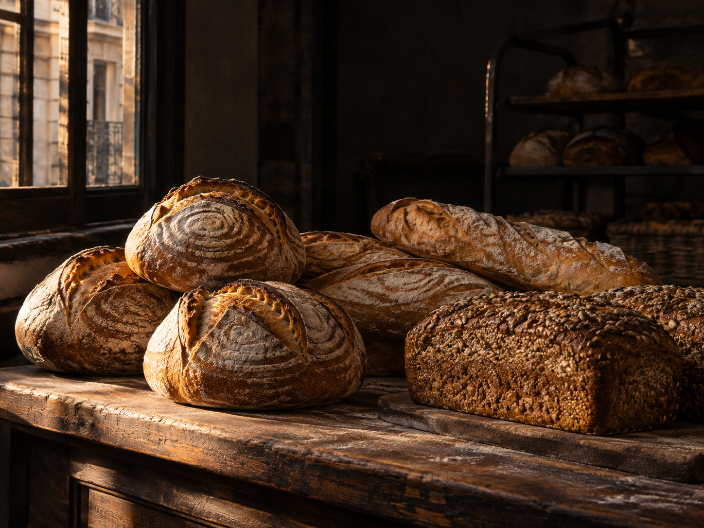
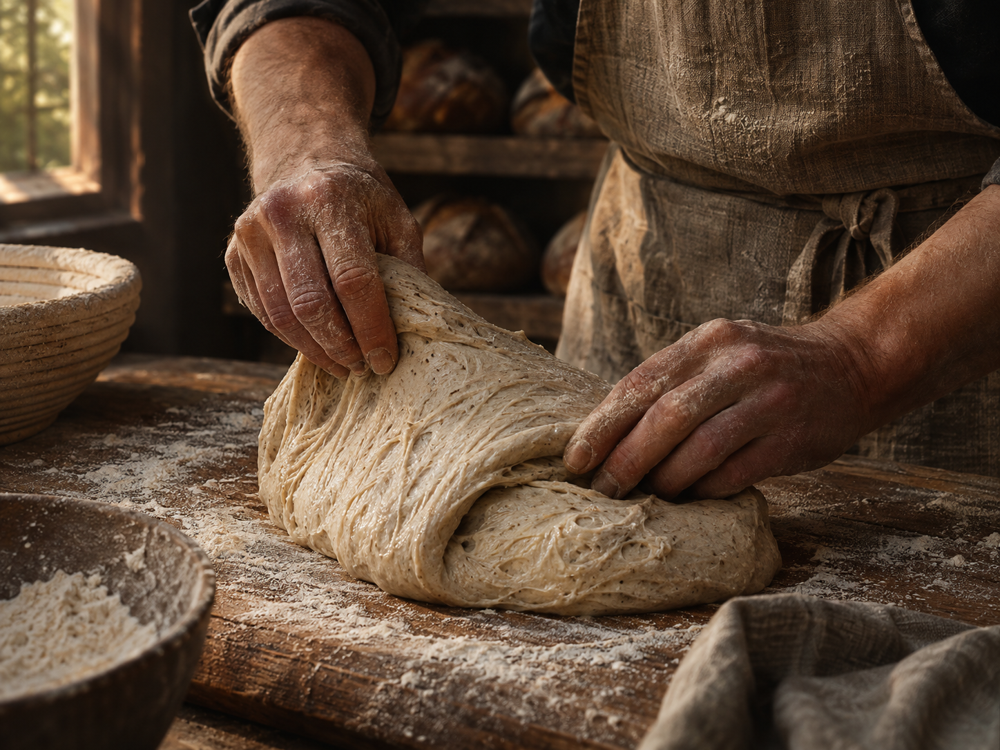
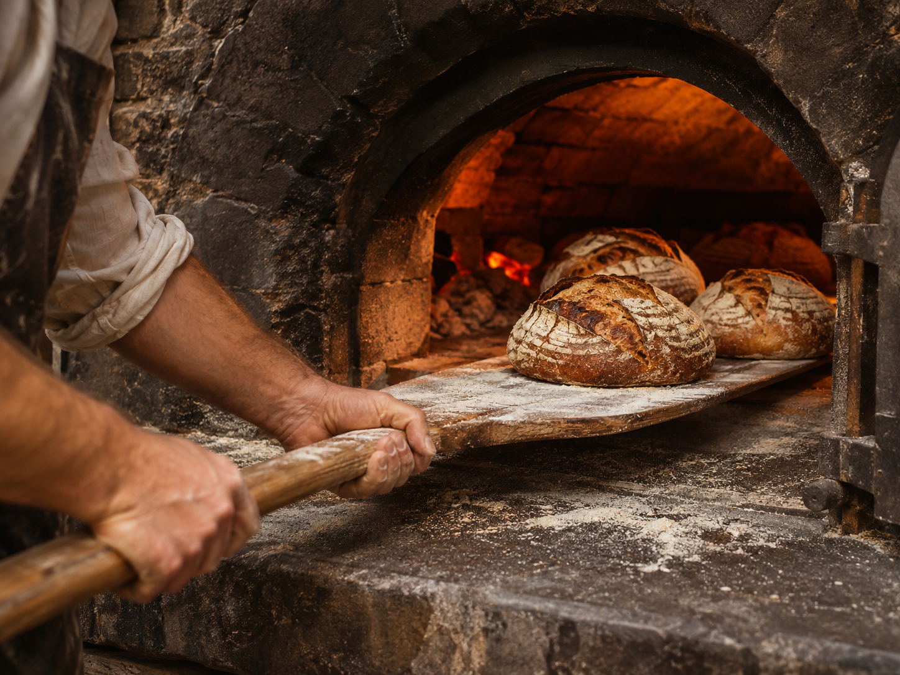

La de la casa
Hogaza de campo
Corteza bien tostada, miga húmeda.
La compañera de cualquier mesa.
Harina, agua, sal y tiempo.
Masa madre que se despierta temprano
para acompañarte todos los días.

Del horno al mostrador
Para cortar, compartir y volver a cortar.
Selección ilustrativa · consultá disponibilidad.
Corteza bien tostada, miga húmeda.
La compañera de cualquier mesa.

Distintas formas, el mismo oficio.
Preguntanos qué salió del horno.

Todo empieza acáLa masa marca el ritmo.
Escribinos y elegí tu próximo pan.

Donde pasa lo bueno.Nuestro oficio
La masa se mezcla, descansa y cambia. La acompañamos con las manos, hasta que está lista para encontrarse con el calor.
Harina y agua. Un comienzo simple.
Plegar, esperar y aprender a mirar.
La corteza toma color. El pan, carácter.
Un pan bajo el brazo
Pasá por el pan de la mesa, el de la tostada
o ese que no llega entero a casa.
Proyecto demo · dirección a confirmar.
Horarios ilustrativos, sin atención comercial real.
La próxima tostada empieza acá.